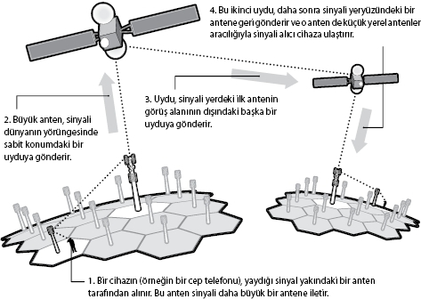

Uzaydaki yörüngeye hakim olma yarışı
Prof. Dr. John Zarnecki, uzay bilimleri profesörü,
Gezegen ve Uzay Bilimleri Araştırma Enstitüsü, Açık Üniversite
Efsanevi bilimkurgu yazarı ve fütürist Arthur C. Clarke'ın, 1945'te Wireless World (Kablosuz Dünya) adlı dergide yayınlanan "Dünyadışı Yayınlar" makalesi, sabit yörüngeli uyduların dünyanın yörüngesine girip telekomünikasyon bağlantıları gibi çalışacaklarını savunuyordu. Clarke bu fikri hayata geçirmek için roket teknolojilerini, kablosuz iletişimi ve radarı birleştirmeyi hayal ediyordu. Uydunun icadı Clarke'a atfedilse de, kimilerine göre o dönemde uydu fikri zaten genel bilinçte yer alıyordu. Ne olursa olsun 12 yıl sonra ilk yapay uydu yörüngeye girdi ve Clarke'ın hayali gerçek oldu.
Sputnik 1 içinde bir radyo vericisinin bulunduğu, sadece 58 cm uzunluğunda boş bir çelik toptu, ama 4 Ekim 1957'de yeryüzünün yüzlerce kilometre üstünde dolanan radyosu yayına başlayınca, insanlık için yeni bir çağı, uzay çağını başlattı. Uydu başta düşünüldüğünden çok daha küçük bir cihazdı. Uydu göndermede ABD'yi geçmeye çalışan roket dahisi ve Sovyet uzay programının fikir babası Sergei Korolev, patronlarının isteğine uymayıp çok daha küçük ve basit olan Sputnik 1 uydusunu yaptı.
15 Mayıs 1957'deki ilk fırlatma denemesi, yan roketlerden birinde çıkan yangın yüzünden uçuşa 100 saniye kala fiyaskoyla sonuçlandı. Başarısızlıkla sonuçlanan yüzlerce denemenin ardından Ruslar nihayet 4 Ekim 1957'de planlandığı gibi havalanan uyduları ile dünyanın yörüngesini ilk kez tam olarak dolandılar. Bunu da ABD'den önce gerçekleştirmiş oldular.
Fiyasko
ABD, Sovyetler Birliği'nin yaklaşmakta olan zaferinin farkında bile değildi. CIA, Sputnik 1'in o akşam tepelerinde dolandığını anladığında, programı önceden haber alamadığı için çılgına dönmüştü.
Sonraki iki ay içinde ABD atağa geçti. Planları, Vanguard TV3 roketiyle greyfurt büyüklüğünde bir uydu göndermekti, ama 6 Aralık günü yapılan fırlatmadan sadece iki saniye sonra roket alev alarak patladı. Uydu ateş topundan kaçmayı başardı ve kendini dinlemeye ayarlı radyolara sinyal vermeye başladı.
Utanç içindeki ABD'nin bu fiyaskoyu telafi etmesi için etkili bir atağa ihtiyacı vardı. ABD Uydu Komitesi üyeleri birkaç hafta önce özel bir kuruma ihtiyaçları olduğunu vurgulamıştı, bundan sekiz ay sonra da NASA kuruldu.
Roket Köpeği
Sputnik 1'in başarısından sonra Sovyet Başbakanı Nikita Kruşçev hemen Korolev'i çağırıp kutladı ve ona başka bir görev verdi: Yörüngeye başka bir şey göndermek. Korolev'in zaten kafasında Sputnik 2 fikri vardı ve tasarımı çoktan hazırdı. 3 Kasım 1957'de, ABD'nin Vanguard TV3 girişiminden bir ay kadar önce Sputnik 2 göğe yükseldi. Bir öncekinden büyük olan bu uydu çıplak gözle görülebiliyordu ve gökyüzünde çizgi çizerken güneş ışığını yansıtıyordu. Bu uydunun en büyük özelliği ise yüküydü.
İçinde Laika vardı. Bu açık renk dişi köpek radyo vericisinin bulunduğu kürenin altındaki basınçlı bir modülün içindeydi. Açık renkli olması, uydudaki kameralarca gözlenip denetlenmesini kolaylaştırıyordu. Dişi olduğundan giysilerinin tasarımı daha basitti.
Sokakları dolaşırken bulunan bu melez köpek, uydunun Dünya yörüngesine girmesiyle beraber, uzay çağının ulusal ikonuna dönüşmüştü bile. Modüle, on gün sonra Laika'yı öldürmek üzere hazırlanan zehirli yiyecek konmuştu, ama işler yolunda gitmedi. Koruyucu yalıtım koptuğu ve ısı kontrol sistemi çöktüğü için, Laika kalkıştan sadece altı saat sonra sıcak ve basınç yüzünden hayatını kaybetti. Kamuoyunun bunu öğrenmesi için 45 yıl geçmesi gerekti. Ekipten Oleg Gazenko sonradan şöyle diyecekti: "Zaman geçtikçe bu duruma daha fazla üzülüyorum. Uçuştan, köpeğin ölümüne değecek kadar şey öğrenemedik."

ABD, uyduların işe yarar şeyler için kullanılması gerektiğine karar verdi. 31 Ocak 1958'de sonunda Explorer 1 uydusunu gönderdi. Uydunun içinde ısı sensörü, parçacık dedektörü, uyduyla çarpışan herhangi bir göktaşının sesini kaydetmek için bir de mikrofon vardı. Jet Fırlatma Laboratuvarı'ndan William Pickering, Wernher von Braun ve James Van Allen ertesi sabah basın toplantısında coşkulu bir şekilde alkışlandı.
1960'larda uydular çeşitli görevleri yerine getirmek üzere tasarlandı. Mayıs 1960'ta başlayan Project Echo iletişim için radyo sinyallerinin yön değiştirmesini test etti. İlki 28 Şubat 1959'da uzaya gönderilen Discoverer uyduları casus uçaklarının yerini alarak "gökyüzündeki gözler" oldular.
Bu yeni bir iletişim ve gözetleme çağının başlangıcıydı. Nitekim uzay çağında uzay yarışı başlamıştı.